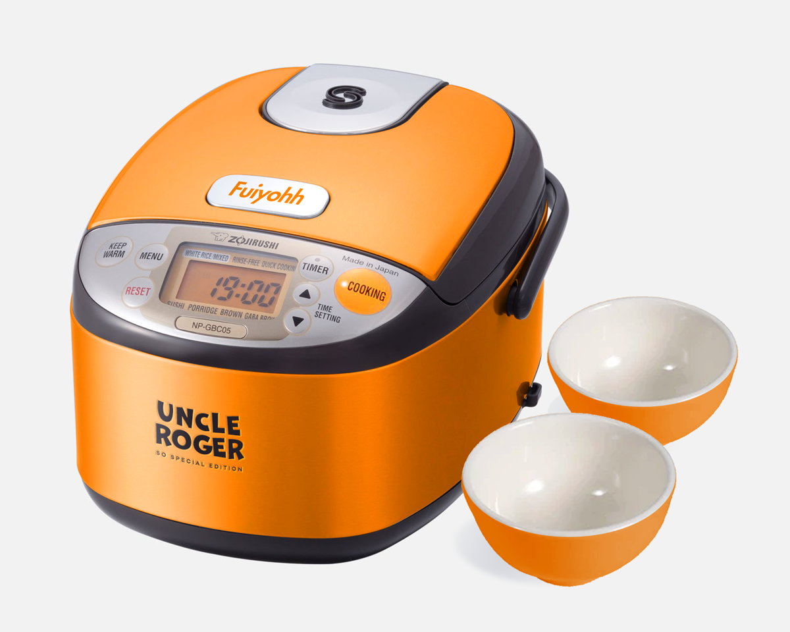

Who is Uncle Roger?

byYouTube
byWikipedia
byShore news

by8days 
byreddit
Uncle Roger, played by comedian Nigel Ng, is a famous internet personality known for his humorous food reviews, especially on Asian cuisine. His signature orange polo shirt and critiques of fried rice have won the hearts of millions.